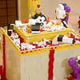
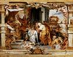

|
|
|
1 Kings 8
|
|
| 8:1
Then Solomon assembled the elders of Israel, and all the heads of the
tribes, the chief of the fathers of the children of Israel, unto king
Solomon in Jerusalem, that they might bring up the ark of the covenant of
the LORD out of the city of David, which is Zion. |
Ark Brought Into Temple
|
| 8:2
And all the men of Israel assembled themselves unto king Solomon at the
feast in the month Ethanim, which is the seventh month.
|
| 8:3
And all the elders of Israel came, and the priests took up the ark. |
|
| 8:4
And they brought up the ark of the LORD, and the tabernacle of the
congregation, and all the holy vessels that were in the tabernacle, even
those did the priests and the Levites bring up. |
|
| 8:5
And king Solomon, and all the congregation of Israel, that were assembled
unto him, were with him before the ark,
sacrificing sheep and oxen, that
could not be told nor numbered for multitude. |
 (8:5) "King Solomon ... sacrificing sheep and oxen, that
could not be told nor numbered for multitude." (8:5) "King Solomon ... sacrificing sheep and oxen, that
could not be told nor numbered for multitude."
When the ark of the covenant was brought into the temple, Solomon killed
more animals than could be numbered.
The Sacrifice of the Old Covenant
(Peter Paul
Rubens, 1626)
|
| 8:6
And the priests brought in the ark of the covenant of the LORD unto his
place, into the oracle of the house, to the most holy place, even under the
wings of the cherubims.
|
| 8:7
For the cherubims spread forth their two wings over the place of the ark,
and the cherubims covered the ark and the staves thereof above.
|
| 8:8
And they drew out the staves, that the ends of the staves were seen out in
the holy place before the oracle, and they were not seen without: and there
they are unto this day. |
|
| 8:9
There was nothing in the ark save the two tables of stone, which Moses put
there at Horeb, when the LORD made a covenant with the children of Israel,
when they came out of the land of Egypt. |
 (8:9)
"There was nothing in the ark save the two tables of stone, which Moses put
there at Horeb." (8:9)
"There was nothing in the ark save the two tables of stone, which Moses put
there at Horeb."
What was in the Ark of the Covenant?
Where did Moses receive the ten commandments?
|
| 8:10
And it came to pass, when the priests were come out of the holy place,
that the cloud filled the house of the LORD, |
 (8:10-11) "The cloud filled the house of the LORD." (8:10-11) "The cloud filled the house of the LORD."
When the priests brought the ark into the temple, a "cloud filled the house of the LORD So that the priests" could not see.
(8:12)
"The LORD said that he would dwell in the thick darkness."
Does God dwell in darkness or in light?
(8:13) "I have surely built thee an house to dwell in."
Does God dwell in temples?
|
| 8:11
So that the priests could not stand to minister because of the cloud: for
the glory of the LORD had filled the house of the LORD.
|
| 8:12
Then spake Solomon, The
LORD said that he would dwell in the thick darkness.
|
| 8:13
I have surely built
thee an house to dwell in, a settled place for thee to abide in for
ever.
|
| 8:14
And the king turned his face about, and blessed all the congregation of
Israel: (and all the congregation of Israel stood;)
|
| 8:15
And he said, Blessed be the LORD God of Israel, which spake with his mouth
unto David my father, and hath with his hand fulfilled it, saying, |
|
| 8:16
Since the day that I brought forth my people Israel out of Egypt, I chose
no city out of all the tribes of Israel to build an house, that my name
might be therein; but I chose David to be over my people Israel. |
|
| 8:17
And it was in the heart of David my father to build an house for the name
of the LORD God of Israel. |
|
| 8:18
And the LORD said unto David my father, Whereas it was in thine heart to
build an house unto my name, thou didst well that it was in thine heart. |
|
| 8:19
Nevertheless thou shalt not build the house; but thy son that shall come
forth out of thy loins, he shall build the house unto my name. |
|
| 8:20
And the LORD hath performed his word that he spake, and I am risen up in
the room of David my father, and sit on the throne of Israel, as the LORD
promised, and have built an house for the name of the LORD God of Israel. |
|
| 8:21
And I have set there a place for the ark, wherein is the covenant of the
LORD, which he made with our fathers, when he brought them out of the land
of Egypt. |
|
| 8:22
And Solomon stood before the altar of the LORD in the presence of all the
congregation of Israel, and spread forth his hands toward heaven: |
|
| 8:23
And he said, LORD God of Israel, there is no God like thee, in heaven
above, or on earth beneath, who keepest covenant and mercy with thy servants
that walk before thee with all their heart: |
|
| 8:24
Who hast kept with thy servant David my father that thou promisedst him:
thou spakest also with thy mouth, and hast fulfilled it with thine hand, as
it is this day. |
|
| 8:25
Therefore now, LORD God of Israel, keep with thy servant David my father
that thou promisedst him, saying, There shall not fail thee a man in my
sight to sit on the throne of Israel; so that thy children take heed to
their way, that they walk before me as thou hast walked before me. |
|
| 8:26
And now, O God of Israel, let thy word, I pray thee, be verified, which
thou spakest unto thy servant David my father. |
|
| 8:27
But will God indeed dwell on the earth? behold, the heaven and heaven of
heavens cannot contain thee; how much less this house that I have builded? |
|
| 8:28
Yet have thou respect unto the prayer of thy servant, and to his
supplication, O LORD my God, to hearken unto the cry and to the prayer,
which thy servant prayeth before thee to day: |
|
| 8:29
That thine eyes may be open toward this house night and day, even toward
the place of which thou hast said, My name shall be there: that thou mayest
hearken unto the prayer which thy servant shall make toward this place. |
|
| 8:30
And hearken thou to the supplication of thy servant, and of thy people
Israel, when they shall pray toward this place: and hear thou in heaven thy
dwelling place: and when thou hearest, forgive. |
|
| 8:31
If any man trespass against his neighbour, and an oath be laid upon him to
cause him to swear, and the oath come before thine altar in this house: |
|
| 8:32
Then hear thou in heaven, and do, and judge thy servants, condemning the
wicked, to bring his way upon his head; and justifying the righteous, to
give him according to his righteousness. |
|
| 8:33
When thy people Israel be smitten down before the enemy, because they have
sinned against thee, and shall turn again to thee, and confess thy name, and
pray, and make supplication unto thee in this house: |
|
| 8:34
Then hear thou in heaven, and forgive the sin of thy people Israel, and
bring them again unto the land which thou gavest unto their fathers. |
|
| 8:35
When heaven is shut up, and there is no rain, because they have sinned
against thee; if they pray toward this place, and confess thy name, and turn
from their sin, when thou afflictest them: |
 (8:35) (8:35)
"Heaven is shut up, and there is no rain, because they have sinned against thee."
God creates droughts by causing "heaven to shut up" as a punishment for sin.
|
| 8:36
Then hear thou in heaven, and forgive the sin of thy servants, and of thy
people Israel, that thou teach them the good way wherein they should walk,
and give rain upon thy land, which thou hast given to thy people for an
inheritance.
|
| 8:37
If there be in the land famine, if there be pestilence, blasting, mildew,
locust, or if there be caterpiller; if their enemy besiege them in the land
of their cities; whatsoever plague, whatsoever sickness there be; |
|
| 8:38
What prayer and supplication soever be made by any man, or by all thy
people Israel, which shall know every man the plague of his own heart, and
spread forth his hands toward this house: |
|
| 8:39
Then hear thou in heaven thy dwelling place, and forgive, and do, and give
to every man according to his ways, whose heart thou knowest; (for thou,
even thou only, knowest the hearts of all the children of men;) |
|
| 8:40
That they may fear thee all the days that they live in the land which thou
gavest unto our fathers. |
|
| 8:41
Moreover concerning a stranger, that is not of thy people Israel, but
cometh out of a far country for thy name's sake; |
|
| 8:42
(For they shall hear of thy great name, and of thy strong hand, and of thy
stretched out arm;) when he shall come and pray toward this house; |
|
| 8:43
Hear thou in heaven thy dwelling place, and do according to all that the
stranger calleth to thee for: that all people of the earth may know thy
name, to fear thee, as do thy people Israel; and that they may know that
this house, which I have builded, is called by thy name. |
|
| 8:44
If thy people go out to battle against their enemy, whithersoever thou
shalt send them, and shall pray unto the LORD toward the city which thou
hast chosen, and toward the house that I have built for thy name: |
|
| 8:45
Then hear thou in heaven their prayer and their supplication, and maintain
their cause. |
|
| 8:46
If they sin against thee, (for there is no man that sinneth not,) and thou
be angry with them, and deliver them to the enemy, so that they carry them away captives
unto the land of the enemy, far or near; |
(8:46)
"There is no man that sinneth not."
Are all humans sinners?
|
| 8:47
Yet if they shall bethink themselves in the land whither they were carried
captives, and repent, and make supplication unto thee in the land of them
that carried them captives, saying, We have sinned, and have done
perversely, we have committed wickedness; |
|
| 8:48
And so return unto thee with all their heart, and with all their soul, in
the land of their enemies, which led them away captive, and pray unto thee
toward their land, which thou gavest unto their fathers, the city which thou
hast chosen, and the house which I have built for thy name: |
|
| 8:49
Then hear thou their prayer and their supplication in heaven thy dwelling
place, and maintain their cause, |
|
| 8:50
And forgive thy people that have sinned against thee, and all their
transgressions wherein they have transgressed against thee, and give them
compassion before them who carried them captive, that they may have
compassion on them: |
|
| 8:51
For they be thy people, and thine inheritance, which thou broughtest forth
out of Egypt, from the midst of the furnace of iron: |
|
| 8:52
That thine eyes may be open unto the supplication of thy servant, and unto
the supplication of thy people Israel, to hearken unto them in all that they
call for unto thee. |
|
| 8:53
For thou didst separate them from among all the people of the earth, to be
thine inheritance, as thou spakest by the hand of Moses thy servant, when
thou broughtest our fathers out of Egypt, O LORD God. |
|
| 8:54
And it was so, that when Solomon had made an end of praying all this
prayer and supplication unto the LORD, he arose from before the altar of the
LORD, from kneeling on his knees with his hands spread up to heaven. |
|
| 8:55
And he stood, and blessed all the congregation of Israel with a loud
voice, saying, |
|
| 8:56
Blessed be the LORD, that hath given rest unto his people Israel,
according to all that he promised: there hath not failed one word of all his
good promise, which he promised by the hand of Moses his servant. |
|
| 8:57
The LORD our God be with us, as he was with our fathers: let him not leave
us, nor forsake us: |
|
| 8:58
That he may incline our hearts unto him, to walk in all his ways, and to
keep his commandments, and his statutes, and his judgments, which he
commanded our fathers. |
|
| 8:59
And let these my words, wherewith I have made supplication before the
LORD, be nigh unto the LORD our God day and night, that he maintain the
cause of his servant, and the cause of his people Israel at all times, as
the matter shall require: |
|
| 8:60
That all the people of the earth may know that the LORD is God, and that
there is none else. |
|
| 8:61
Let your heart therefore be perfect with the LORD our God, to walk in his
statutes, and to keep his commandments, as at this day. |
|
| 8:62
And the king, and all Israel with him, offered sacrifice before the LORD. |
|
| 8:63
And Solomon offered a
sacrifice of peace offerings, which he offered unto the LORD, two and twenty
thousand oxen, and an hundred and twenty thousand sheep. So the king and
all the children of Israel dedicated the house of the LORD. |
(8:63) "He offered unto the LORD, two and twenty thousand oxen, and an hundred and twenty
thousand sheep."
When dedicating the temple, Solomon kills 22,000 oxen and 120,000 sheep. All this blood and gore must have made God very happy.
|
| 8:64
The same day did the king hallow the middle of the court that was before
the house of the LORD: for there he offered burnt offerings, and meat
offerings, and the fat of the peace offerings: because the brasen altar that
was before the LORD was too little to receive the burnt offerings, and meat
offerings, and the fat of the peace offerings.
|
| 8:65
And at that time Solomon held a feast, and all Israel with him, a great
congregation, from the entering in of Hamath unto the river of Egypt, before
the LORD our God, seven days and seven days, even fourteen days. |
|
| 8:66
On the eighth day he sent the people away: and they blessed the king, and
went unto their tents joyful and glad of heart for all the goodness that the
LORD had done for David his servant, and for Israel his people.
|
|
|


{kind=link}